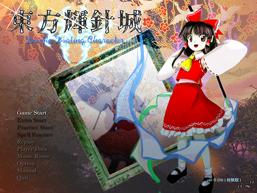

不可思議で不穏な異変
東方輝針城 〜 Double Dealing Character.

「東方輝針城 〜 Double Dealing Character.」は少女弾幕シューティング（ＳＴＧ）です。
今作品は敵を倒して避けてまったりする内容です。
＊このゲームには過激な弾幕シーンが含まれております
小さなお子様や、弾幕アレルギーの方は医師に相談してください。
動作環境
必須環境
ＯＳ
Windows VISTA/7
DirectX ランタイム (June 2010) 以降の最新版がインストールされていること
ＣＰＵ
十分な速度を持ったCPU
ビデオカード
DirectGraphic 対応の高速なビデオカード(推奨 VRAM 256M以上)
推奨環境
サウンド
Direct Sound対応のサウンドカード
その他
パッドコントローラ
ある程度の弾幕免疫
傲慢な心（推奨）
１．概要
２．バックストーリー
３．プレイヤーキャラ紹介
４．操作方法
５．タイトル画面
６．ゲームシステム
作者のページへ
プログラム本体、イメージデータ、曲データ、及びマニュアル全ての著作権は製作者ＺＵＮにあります。
著作者の許可無しで複製、転載、配布を禁じます。
2013 (C)opyright ZUN. All rights reserved.